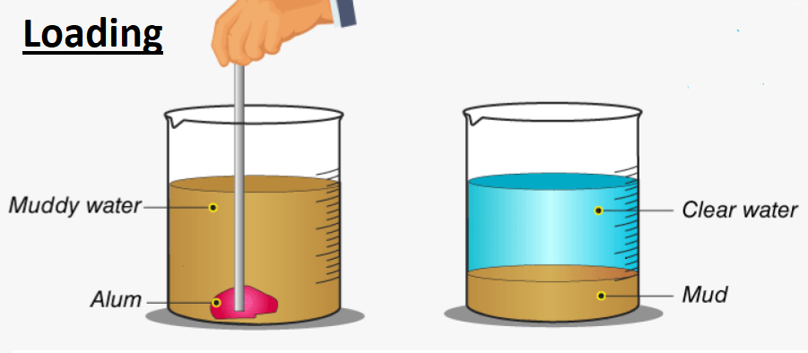
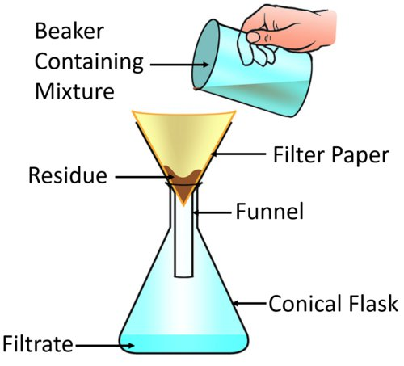
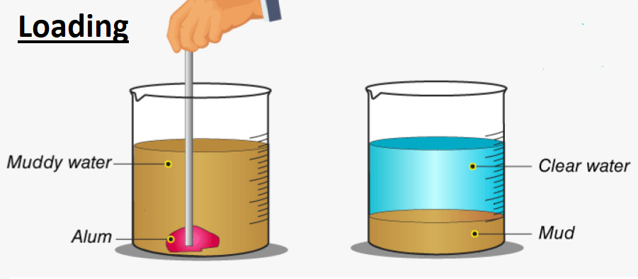
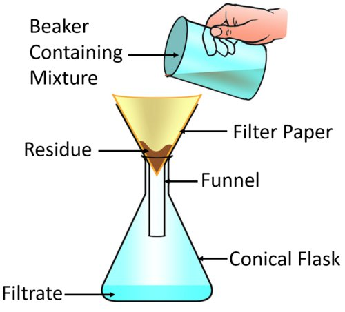
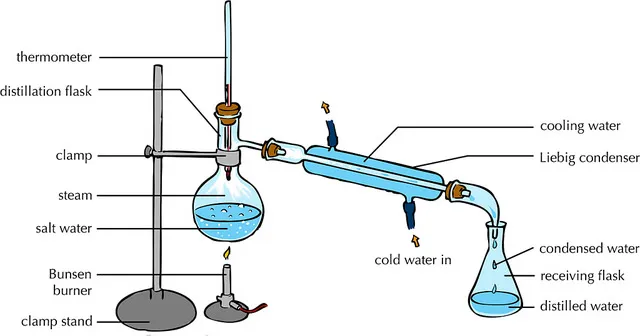
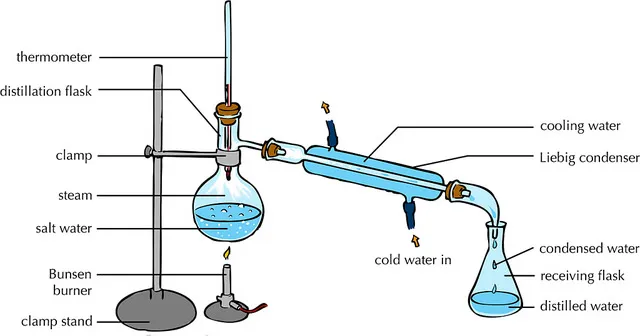

Hand-Picking
Hand-picking involves picking out substances by hand and separating them from others.
It is used when the components to be separated are large and easily distinguishable, unwanted materials are present in small quantities, and the shape, size and colour of the unwanted materials are different from those of the useful materials.
For example, small stones, broken grains and husk are separated from rice, wheat and pulses by hand-picking.
Threshing
Threshing is the process of separating grain from the harvested stalks.
After harvesting the wheat and rice crops, the grains are separated from the stalks.
This is done by threshing.
It can be done by manually beating the dry stalks on the ground or a hard surface to shake off the dried grains, trampling them under the feet of animals like bullocks or using threshing machines.
Winnowing
Winnowing is used for separating grains from husk.
Farmers drop the mixture of grains and husk from a height.
The husk is carried by the wind and forms a heap at a small distance away.
The wheat grains being heavier fall almost vertically to form a separate heap.
In this method wind is used to separate heavier particles (sand) from the lighter particles (powdered dry leaves).
Sieving
Sieving is used for separating components of a mixture on the basis of their particle size.
A sieve is usually made of a woven screen such as a mesh or a net. The size of the pores in the sieve depends on the size of the particles of the constituent to be separated.
Pores in a sieve allow the smaller components of the mixture to pass through and retain the larger ones.
A sieve is commonly used at home to separate bran from the wheat flour.
Sieving is also used for separating gravel from sand. A sieve with bigger pores is used at construction sites to separate stones from sand.
Magnetic Separation
Some substances are attracted by a magnet.
Such substances are called magnetic substances.
In a mixture, where one of the components is magnetic in nature and the other is non-magnetic, the components can be separated using a magnet.
For example, iron is magnetic while sand is non-magnetic.
So, we can use a magnet to separate iron filings mixed in sand.
The iron filings get attracted towards the magnet and stick to it while the sand particles are left behind.


 



 
